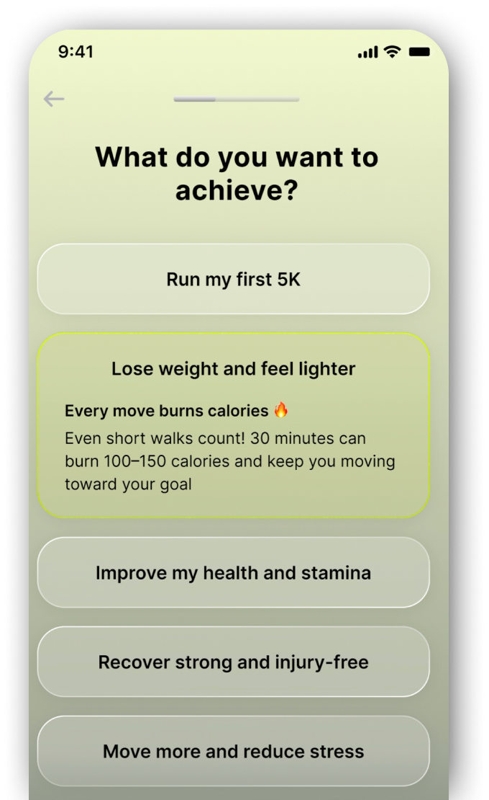
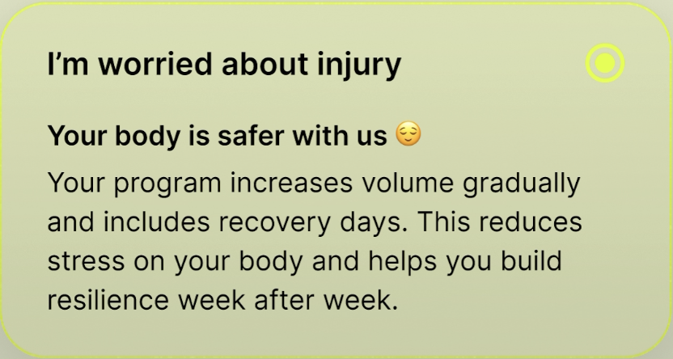
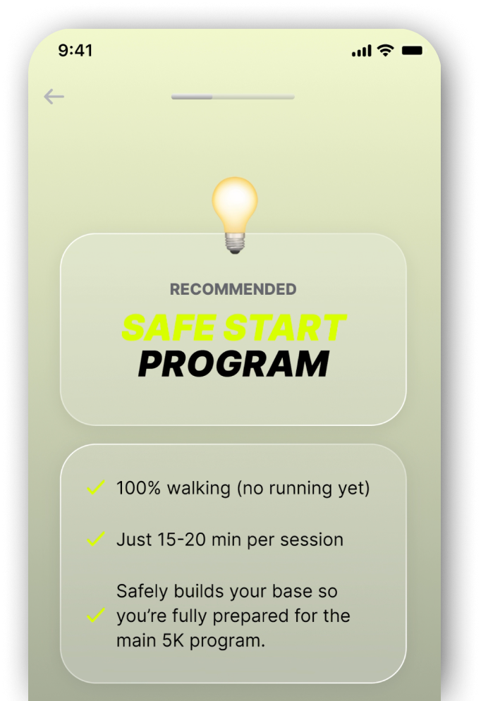

Reimagining
onboarding with
adaptive flows

The onboarding flow felt outdated and generic.
Couch to 5K is a running app designed for complete beginners to help them complete their first run.
Onboarding defines the first impression, especially on a running app. It is important to identify and address the user appropriately from the very beginning. But all users were going through the same process, with questions that seemed ill-suited to their profiles. The low first-run completion rate reinforced this: when users feel the plan wasn't made for them, they don't follow through.
UX/UI Analysis
The onboarding collected basic user data, but that was not enough to identify the user's profile and adapt the experience. Almost every user landed on the same beginner plan, regardless of why they were there or how fit they were.
-
No goal alignment Users were asked about their main goal, but this did not affect the rest of the flow.
-
One-size-fits-all The same plan was recommended to almost all users, suggesting that the questions (or/and plans) were not appropriate to the target.
-
Outdated design UI was inconsistent with the rest of the app, which had recently been completely redesigned
Users don't want a program.
They want a plan made for them.
Get to know the users better before anything else.
Essential to properly identify the user being onboarded.
Show users that we're listening to them.
Work within the design system while improving it.
Shifting from a linear onboarding to adaptive flows
New flow:
Constraints & design implications
- Design system The new onboarding's design must fit the app's V2 design system already used everywhere else in the app, including when creating new components.
User data analysis
Analyzing deeply user data allowed us to discover key points about the app's users. With the help of the data team lead, I built personae to keep each profile in mind while designing. The app had assumed all new users were complete beginners, but data revealed a wider range of profiles the existing flow was failing.
- Each persona maps to a distinct set of questions, fitness assumptions, and plan recommendations.
- Discovering that 10–20% of users couldn't yet run was the direct trigger for the Safe Start Program.
Personalized flows
Depending on the selected goal, users are directed to a different onboarding flow. The alternative was a longer universal flow covering every scenario, which would have felt like a survey. Branching on stated goal means each user only answers questions relevant to them.
- A "Weight loss" goal triggers fitness and health questions; a "Get active" goal focuses on schedule and motivation instead.
- Each branch is shorter than the old universal flow, reducing the number of steps before the plan is generated.

Dynamic content & UX writing
Selecting an answer displays a specific message offering helpful advice or encouragement. The old onboarding was purely transactional (answer, next, answer, next). A contextual response after each answer proves the app read the input, which is disproportionately valuable at sign-up when trust hasn't been built yet.
- A user who mentions injury gets a careful, reassuring message, not the same copy as someone who is just short on time.
- The writing was crafted per answer option, not per screen, so tone matches context at every step.

Address all users
Based on user analysis showing that 10-20% of users were unable to run yet, we designed the 'Safe Start Program'. A modified beginner plan wasn't enough: users in physical recovery need different intensity targets, rest intervals, and safety messaging. When they represent 10-20% of installs, designing them out isn't an option.
- A specific program for the most sensitive users (highly overweight, recovering etc.)
- Fitness-related questions help ensure the program is pushed to the right users.


An onboarding experience tailored to users
Based on user responses, the flow now branches into tailored paths, allowing us to ask more relevant questions, provide more personalized content and generate a plan that better fits each individual's needs, which is especially important for beginners with specific health or fitness concerns.
- Flow branches based on stated goals, no generic path
- Dynamic content and UX writing personalized per user
- Safe Start Program for users with health constraints
Results
Completion rate across all onboarding steps rose from 54% to 66%, with the adaptive flow reducing drop-off at each decision point.
Trial-to-paid conversion among users who completed the new onboarding, supported by stronger goal-setting and early value delivery.
Day-30 retention for users who went through the new onboarding, with personalised starts building stronger early habits.
What I'd improve next
Personalised onboarding moved conversion and retention, but the training plan itself remains static once started. These are the areas where the design has the most room to grow.
Personalization isn't just about better outcomes.
It's about building trust early.